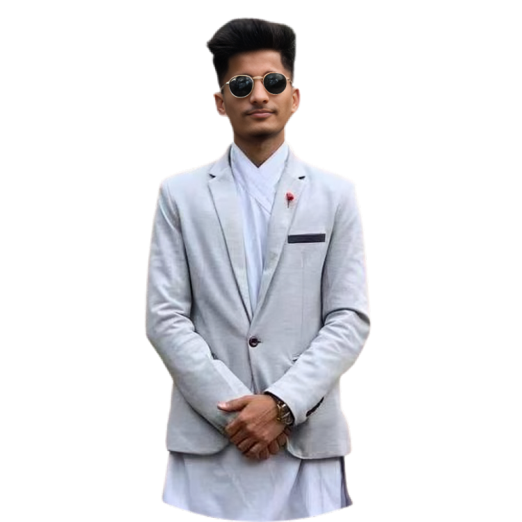

Hello, I'm
Sagar Joshi
Mechanical Engineer


Hello, I'm
Mechanical Engineer
Get To Know More

3+ years
Project Manager and Mechanical Engineer

Mechanical Engineering
M.S Professional Engineering
I am a final-year master’s student in Mechanical Engineering at the University of Technology Sydney. I seek a job to apply my academic knowledge and hands-on experience in mechanical design, project management, and technical documentation. I am proficient in industry-standard software like AutoCAD, ANSYS, and Solid Edge, and I have a proven ability to lead multidisciplinary engineering projects to successful completion.
Explore My
Pu Chuang Technology Pvt. Ltd., Kathmandu, Nepal
Nov 2019 - Jan 2022
Pu Chuang Technology Pvt. Ltd., Kathmandu, Nepal
Sep 2018 - Oct 2019
Browse My


My Thoughts
Reflection on Principles of Sustainability to Create Viable Systems
In mechanical engineering, sustainability plays a central role in designing systems that are efficient, environmentally responsible, and beneficial to society. My work on Hydrogen Storage Optimization in Metal Hydrides is one example of integrating these principles. The project focused on improving the capacity and efficiency of hydrogen storage, which is critical for developing renewable energy systems (Staffell et al., 2019).
This project highlighted key sustainability principles, such as lifecycle thinking and resource efficiency. We worked to minimize the system’s environmental footprint, aligning with global sustainability goals. This experience solidified my understanding that sustainability must be embedded at every stage of engineering design, from concept to implementation, to create truly viable systems for the future.
Reflection on Professional Practice within Intercultural and Global Contexts
My role as a Project Manager at Pu Chuang Technology Pvt. Ltd. gave me invaluable experience in navigating intercultural and global contexts. Working on large-scale projects required me to manage diverse teams and collaborate with international stakeholders. I adjusted my communication and management style to accommodate cultural differences, which is crucial for effective project execution (Eringa et al., 2015).
This experience underscored that techsnical proficiency alone is not enough in global engineering projects—cultural competence and adaptability are equally crucial. In the future, I will continue to apply these intercultural skills to ensure success in diverse, global engineering environments.
References:
Get in Touch